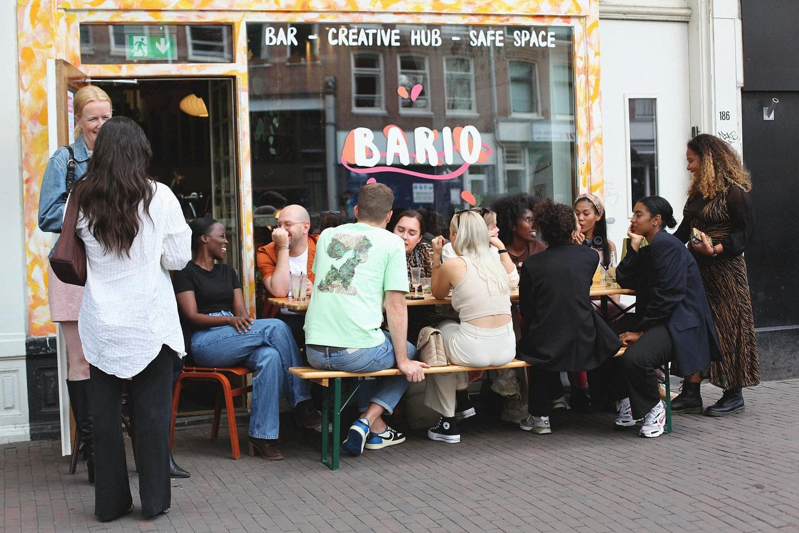

Bars & Clubs
Bar Bario
Bar Bario is a pub that focuses on creating a safer space for marginalized communities,
like the BPOC, Trans & Queer community. Besides that, Bar Bario also oparate as creative hub that
organizes exhibitions and events. The space, even though small, gives off a warm and welcoming ambiance.
If you are looking to visit any exposition or event you should check their Instagram,
where they regularly post updates of their schedule.

Best :
Art and Inclusivity
Info :
- Price Range: $
- Busy: moderate
- Crouwd: LGBTQA+ & Creatives
Waterkant
Waterkant is bar-restaurant named after the oldest street of Paramaribo, the capitol of Suriname.
They serve both Dutch and Surinamese dishes and an variety of alcoholic beverages.
With outside seating along the Singelgracht you can enjoy your food and drinks with a calming view of
the water
and maybe spot some boats floating by. And if you are ready to dance and want to enjoy some African and
Surinames beats,
mixed with some R&B and Hip Hop, you should go visit in the weekend. Waterkant hosts club nights every
Friday and Saturday
from 23:00 until 03:00, so don't miss out!
Best :
Canal view and Surinamese food
Info :
- Price Range: $$
- Busy: very
- Crouwd: mid 20s to early 30s
Sound Garden
Sound Garden Café is one of the few alternative cafés left in Amsterdam.
Play pool, drink a beer and enjoy a casual, alternative atmosphere with the music to match.
With it's rough-around-the-edges look, nice waterside terrace and affordable drinks,
Sound Garden brings a unique atmosphere that you have to experience!

Best :
Alternative & authentic
Info :
- Price Range: $
- Busy: moderate to busy
- Crouwd: Alternative
Club NYX
Club Nyx is a nightclub that welcomes everyone, gay and straight, plus everyone in between.
A four-story building that used to be a carriage house, now houses one of the most popular
clubs among Amsterdam locals. Located in Reguliersdwarsstraat, known for being the center
of queer nightlife. Nyx is a space created for anyone who wants to have fun, drink and dance.
Having different music playing at every story of the building guarantees that you will find a
sound that suits your taste.
Best :
fun, colorful and lively
Info :
- Price Range: $/$$
- Busy: very
- Crouwd: Young & queer